1. Dasbor
Setelah masuk, Dasbor menampilkan ringkasan aset di ruangan Anda: jumlah, nilai, kondisi, pinjaman aktif/terlambat, tiket terbuka, dan DBR yang perlu diperbarui. Anda mengelola hanya ruangan yang ditugaskan; barang ruangan lain hanya dapat dilihat.
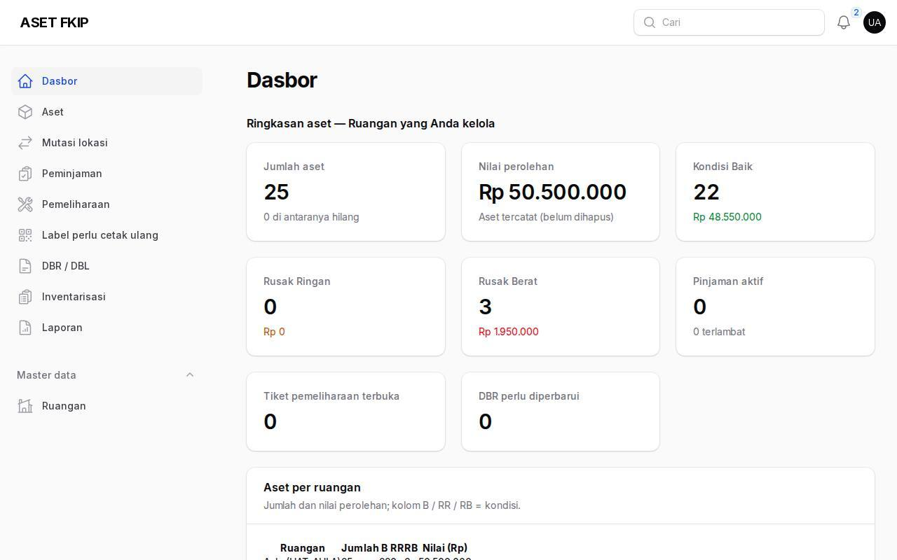
2. Memindai barang
- Buka /pindai di ponsel dan izinkan kamera, atau ketik kode label lalu Cari. Label baru (QR) maupun label lama (
KATEGORI-KODE-UNIT, nomor BMN/NUP) dikenali. - Dari hasil pindai Anda dapat mengubah kondisi, mengajukan mutasi, atau melaporkan kerusakan.
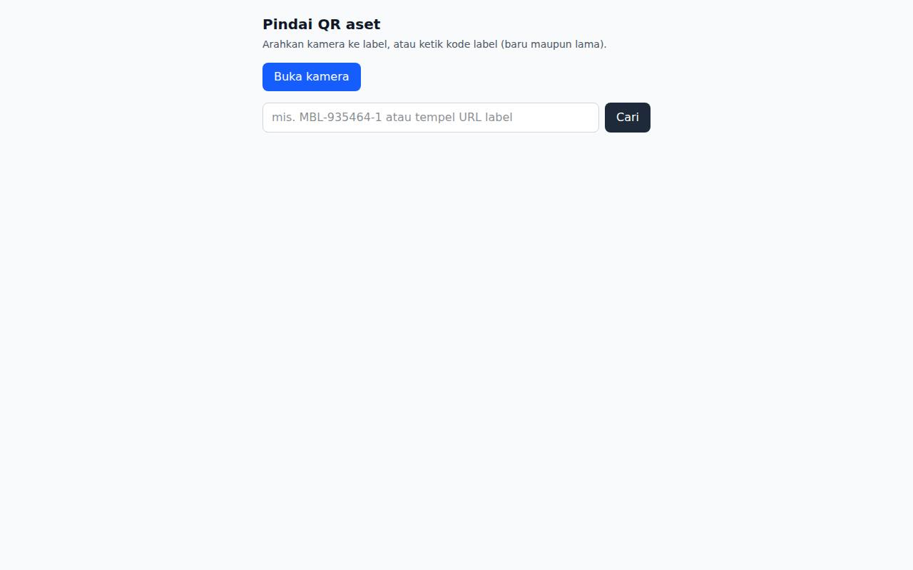
3. Daftar aset dan ubah kondisi
- Menu Aset memuat seluruh barang (filter dan pencarian tersedia). Pada baris barang di ruangan Anda pilih Ubah kondisi: B (Baik), RR (Rusak Ringan), RB (Rusak Berat) beserta catatan. Semua perubahan tercatat di riwayat.
- Beberapa barang sekaligus: centang lalu pakai aksi massal. Barang di ruangan lain akan ditolak (403).
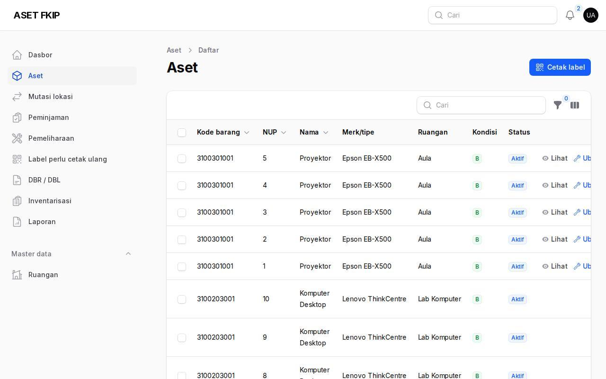
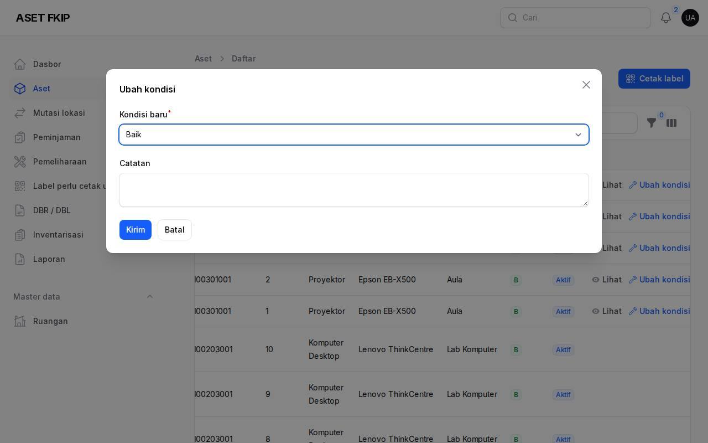
4. Meminjamkan dan menerima pengembalian
- Keranjang (
/keranjang): tambahkan barang, isi peminjam, keperluan, dan rencana kembali. Keranjang bersifat semua-atau-tidak-sama-sekali; barang bermasalah disebutkan namanya. - Menu Peminjaman: tab Aktif/Terlambat/Diajukan/Riwayat. Pengajuan civitas → Setujui/Tolak, lalu Serahkan barang saat diambil dan Terima pengembalian (isi kondisi saat kembali). Kondisi RR/RB otomatis membuka tiket pemeliharaan.
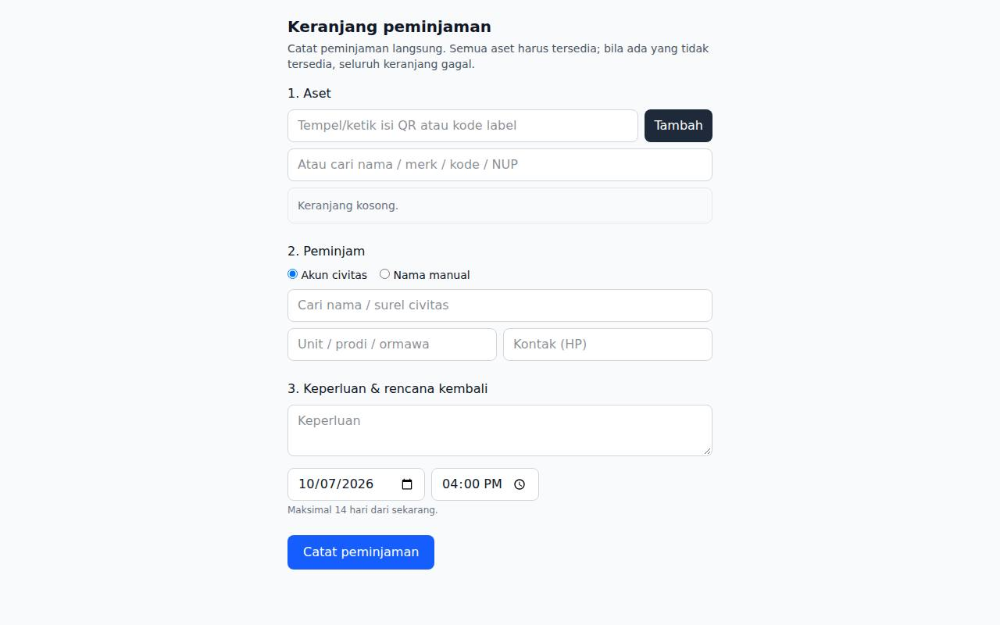
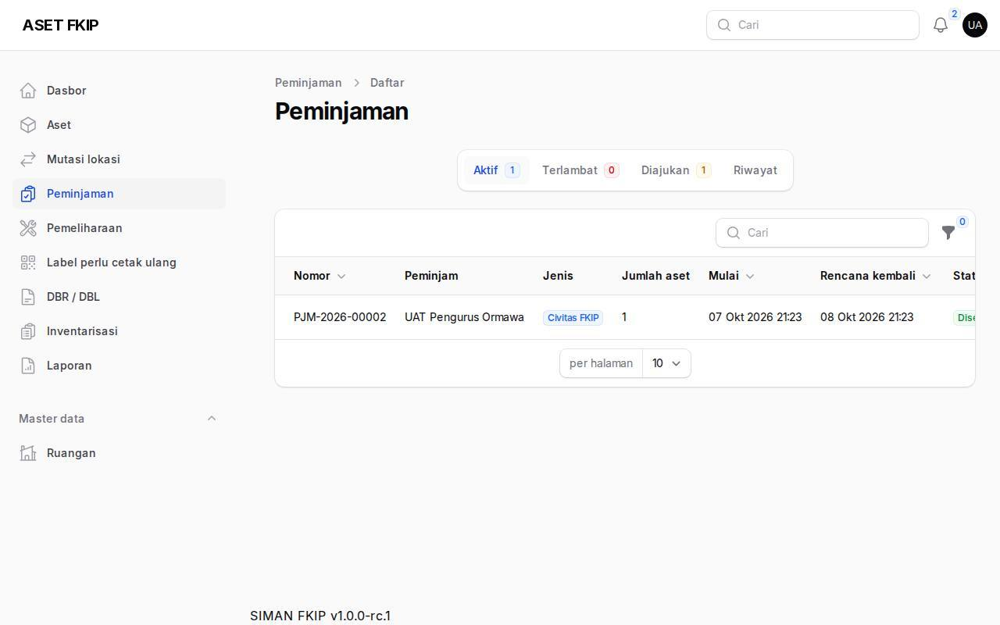
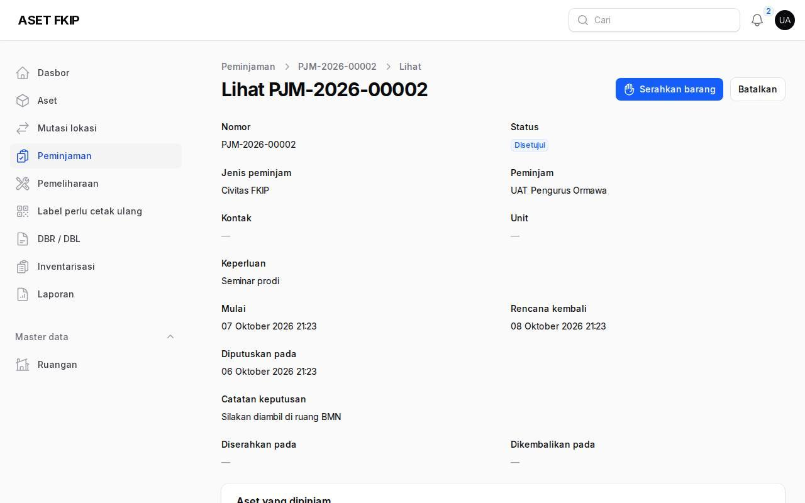
5. Pemeliharaan
Pemeliharaan memuat tiket kerusakan (dari laporan publik atau dibuka PIC). Alur: Proses → Menunggu suku cadang → Selesaikan (tindakan, biaya, kondisi akhir) atau Tidak dapat diperbaiki. Barang yang diperbaiki tidak dapat dipinjam.
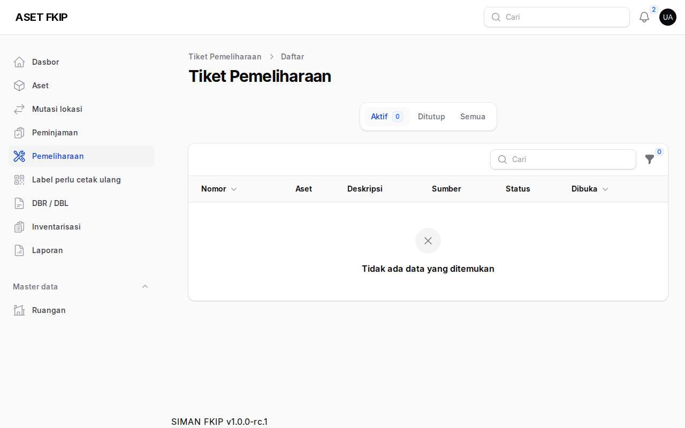
6. Mutasi lokasi
Mutasi lokasi → Ajukan mutasi dari ruangan Anda ke ruangan tujuan, pilih barang dan isi alasan. Admin BMN memutuskan; PIC asal dan tujuan diberi tahu. Mutasi ditahan saat ruangan diinventarisasi.
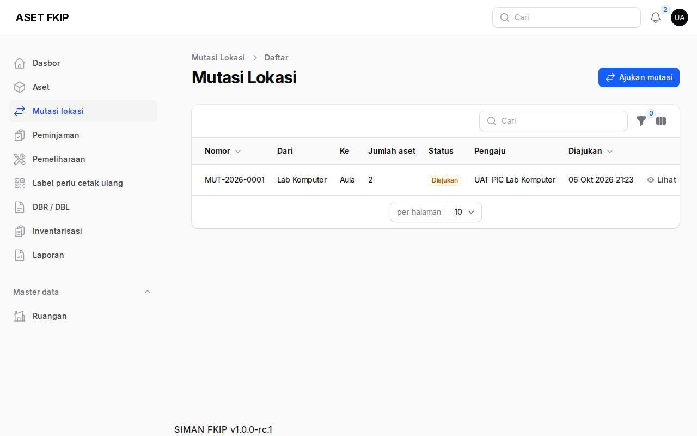
7. DBR/DBL
DBR / DBL → Bangkitkan DBR/DBL untuk ruangan Anda, periksa daftar, lalu Setujui (tanda tangan PIC). Pejabat penatausahaan kemudian mengesahkan; PDF dapat dicetak kapan saja. Jika barang di ruangan berubah, versi yang disahkan ditandai perlu diperbarui.
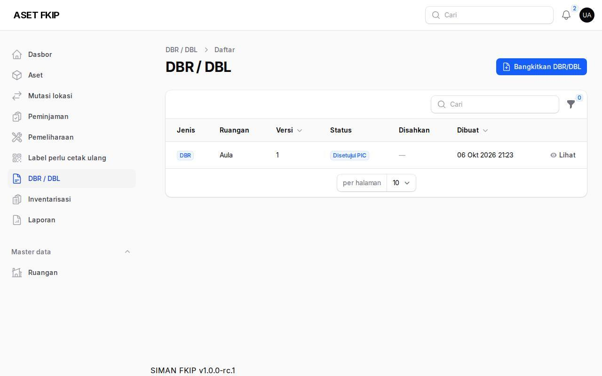
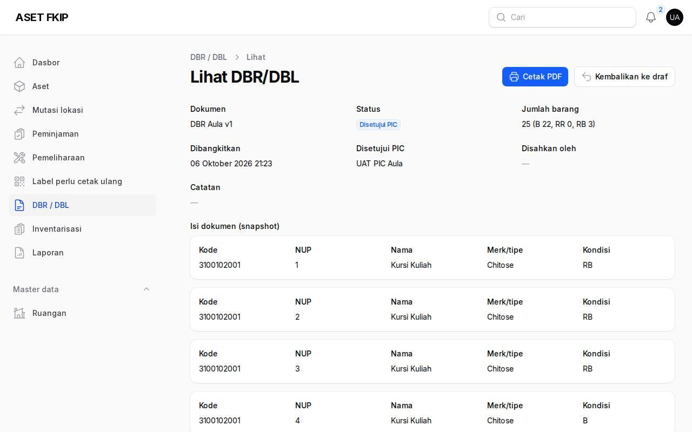
8. Inventarisasi ruangan
Saat admin menugaskan Anda, buka Inventarisasi → ruangan → Buka pemindaian. Pindai tiap barang (ditemukan / kondisi berubah), catat temuan berlebih, pantau progres, lalu Selesai ruangan; barang yang tidak terpindai menjadi tidak ditemukan.
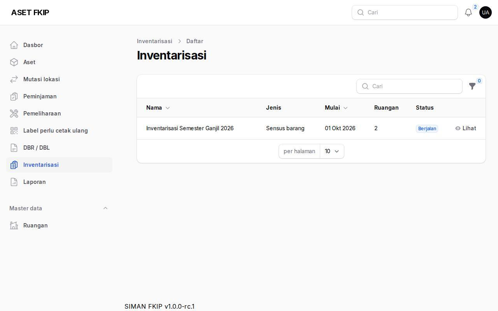
9. Cetak label
Pada Aset centang barang → Cetak label (PDF berisi QR). Label hasil migrasi yang perlu dicetak ulang ada di menu Label perlu cetak ulang; tandai setelah ditempel.